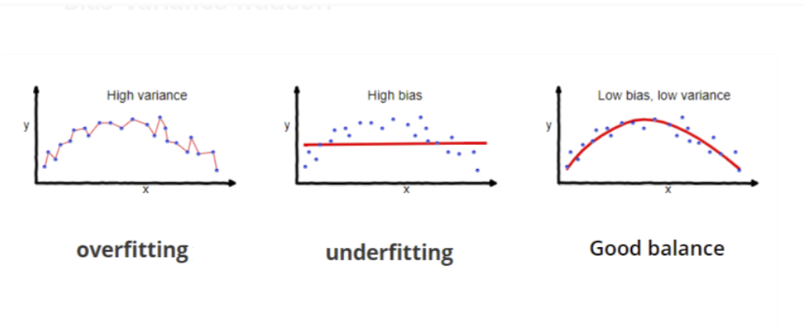
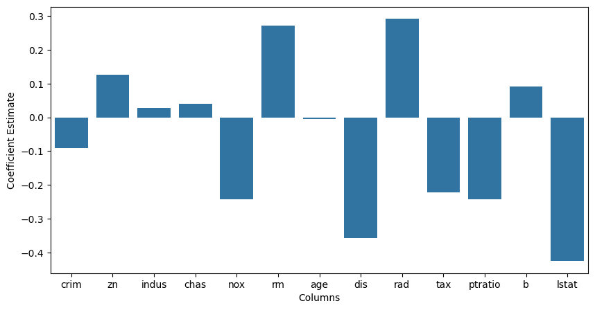
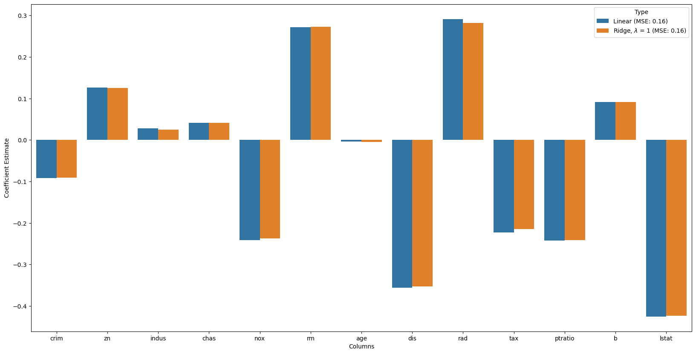
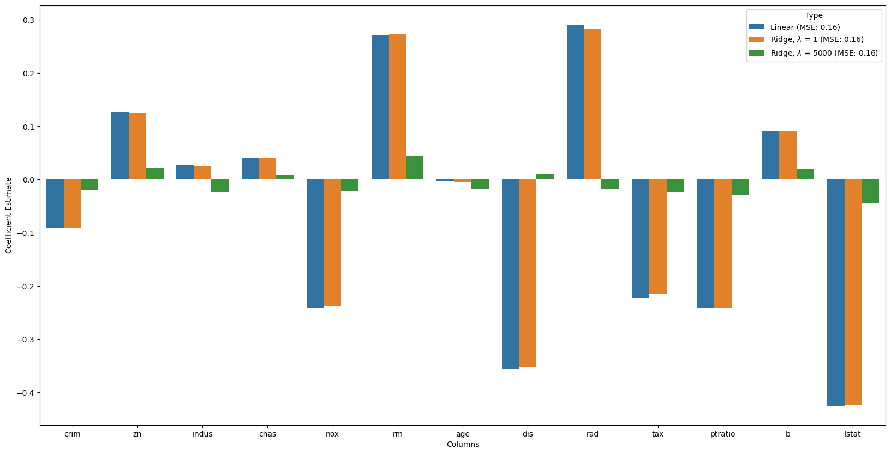
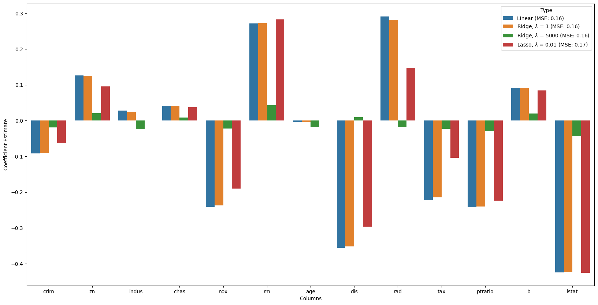
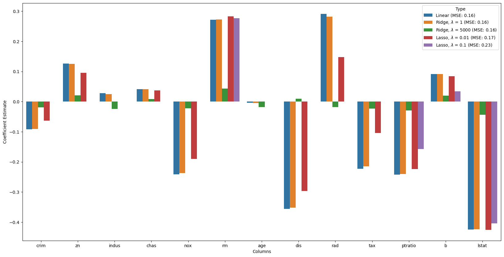

12 Regularization
12.1 Why is it important?
12.1.0.1 In simple terms
A technique that is used to limit model overfitting by shrinking the coefficient estimates towards zero. Our goal is optimized prediction and not inference.
12.1.0.2 In more exact terms
Regularized least squares (RLS) is a family of methods for solving the least-squares problem while using regularization to further constrain the resulting solution.
RLS is used for two main reasons. The first comes up when the number of variables in the linear system exceeds the number of observations. In such settings, the ordinary least-squares problem is ill-posed and is therefore impossible to fit because the associated optimization problem has infinitely many solutions. RLS allows the introduction of further constraints that uniquely determine the solution.
The second reason that RLS is used occurs when the number of variables does not exceed the number of observations, but the learned model suffers from poor generalization. RLS can be used in such cases to improve the generalizability of the model by constraining it at training time. This constraint can either force the solution to be “sparse” in some way or to reflect other prior knowledge about the problem such as information about correlations between features. A Bayesian understanding of this can be reached by showing that RLS methods are often equivalent to priors on the solution to the least-squares problem.
https://en.wikipedia.org/wiki/Regularized_least_squares
https://scikit-learn.org/stable/modules/linear_model.html
12.1.1 We will focus on two methods of regularized regression
12.1.1.1 (1) Ridge
- Performs L2 regularization, i.e. adds penalty equivalent to square of the magnitude of coefficients
- Minimization objective = LS Obj + α * (sum of square of coefficients)
https://en.wikipedia.org/wiki/Ridge_regression
12.1.1.2 (2) Lasso
https://en.wikipedia.org/wiki/Lasso_(statistics)
- Performs L1 regularization, i.e. adds penalty equivalent to absolute value of the magnitude of coefficients
- Minimization objective = LS Obj + α * (sum of absolute value of coefficients)
12.1.2 Some notes on usage
For both ridge and lasso you have to set a so-called “meta-parameter” that defines how aggressive regularization is performed. Meta-parameters are usually chosen by cross-validation. For Ridge regression the meta-parameter is often called “alpha” or “L2”; it simply defines regularization strength. For LASSO the meta-parameter is often called “lambda”, or “L1”. In contrast to Ridge, the LASSO regularization will actually set less-important predictors to 0 and help you with choosing the predictors that can be left out of the model.
12.1.3 What happens when we use more and more predictors?
12.2 Example
We will use data from the boston house prediction dataset.
In this dataset, each row describes a Boston town or suburb.
There are 506 rows and 13 attributes (features) with a target column (price).
# # load dataset
# boston_dataset = datasets.fetch_california_housing()
# # boston_dataset = datasets.load_diabetes()
# print(boston_dataset.DESCR)
# import dataset
file = "./BostonHousing.csv"
data = pd.read_csv(file)
data.head()| crim | zn | indus | chas | nox | rm | age | dis | rad | tax | ptratio | b | lstat | PRICE | |
|---|---|---|---|---|---|---|---|---|---|---|---|---|---|---|
| 0 | 0.00632 | 18.0 | 2.31 | 0 | 0.538 | 6.575 | 65.2 | 4.0900 | 1 | 296 | 15.3 | 396.90 | 4.98 | 24.0 |
| 1 | 0.02731 | 0.0 | 7.07 | 0 | 0.469 | 6.421 | 78.9 | 4.9671 | 2 | 242 | 17.8 | 396.90 | 9.14 | 21.6 |
| 2 | 0.02729 | 0.0 | 7.07 | 0 | 0.469 | 7.185 | 61.1 | 4.9671 | 2 | 242 | 17.8 | 392.83 | 4.03 | 34.7 |
| 3 | 0.03237 | 0.0 | 2.18 | 0 | 0.458 | 6.998 | 45.8 | 6.0622 | 3 | 222 | 18.7 | 394.63 | 2.94 | 33.4 |
| 4 | 0.06905 | 0.0 | 2.18 | 0 | 0.458 | 7.147 | 54.2 | 6.0622 | 3 | 222 | 18.7 | 396.90 | 5.33 | 36.2 |
crim 0
zn 0
indus 0
chas 0
nox 0
rm 0
age 0
dis 0
rad 0
tax 0
ptratio 0
b 0
lstat 0
PRICE 0
dtype: int6412.3 Start the regression :)
12.3.1 Super important!!! standardize the data before applying regularization
12.3.1.1 Split the data into test and training groups
# split the data into training and testing groups
(x_train,
x_test,
y_train,
y_test) = train_test_split(X, Y, test_size = 0.25)
print("Train data shape of X = % s and Y = % s : "%(
x_train.shape, y_train.shape))
print("Test data shape of X = % s and Y = % s : "%(
x_test.shape, y_test.shape))Train data shape of X = (379, 13) and Y = (379,) :
Test data shape of X = (127, 13) and Y = (127,) : 12.4 Multiple Linear Regression
First, let’s try multiple linear regression, so that we have a point of comparison
# Apply multiple Linear Regression Model
lreg = LinearRegression()
lreg.fit(x_train, y_train)
# Generate Prediction on test set
lreg_y_pred = lreg.predict(x_test)
# calculating Mean Squared Error (mse)
mean_squared_error = np.mean((lreg_y_pred - y_test)**2)
print("Mean squared Error on test set : ", mean_squared_error)
# Putting together the coefficients and their corresponding variable names
lreg_coefficient = pd.DataFrame()
lreg_coefficient["Columns"] = x_train.columns
lreg_coefficient['Coefficient Estimate'] = pd.Series(lreg.coef_)
lreg_coefficient['Type'] = 'Linear (MSE: '+ str(np.around(mean_squared_error,2))+')'Mean squared Error on test set : 0.16355502227534496# plotting the coefficient score
fig, ax = plt.subplots(figsize =(10, 5))
sns.barplot(x = lreg_coefficient["Columns"],
y = lreg_coefficient['Coefficient Estimate'],
hue = None) <Axes: xlabel='Columns', ylabel='Coefficient Estimate'>
12.4.1 Now, let’s try Ridge regression
# Train the model
alpha = 1
ridgeR = Ridge(alpha = alpha)
ridgeR.fit(x_train, y_train)
y_pred = ridgeR.predict(x_test)
# calculate mean square error
mean_squared_error_ridge = np.mean((y_pred - y_test)**2)
print("Mean squared Error on test set : ", mean_squared_error_ridge)
# get ridge coefficient
ridge_coefficient = pd.DataFrame()
ridge_coefficient["Columns"]= x_train.columns
ridge_coefficient['Coefficient Estimate'] = pd.Series(ridgeR.coef_)
ridge_coefficient['Type'] = r'Ridge, $\lambda$ = '+ f'{alpha} (MSE: {str(np.around(mean_squared_error,2))})'Mean squared Error on test set : 0.16328472190858787# merge dataframes
frames = [lreg_coefficient,
ridge_coefficient]
all_coefs = pd.concat(frames)
# plotting the coefficient scores
fig, ax = plt.subplots(figsize =(20, 10))
sns.barplot(x = all_coefs["Columns"],
y = all_coefs['Coefficient Estimate'],
hue = all_coefs['Type']) <Axes: xlabel='Columns', ylabel='Coefficient Estimate'>
# Train the model
alpha = 5000
ridgeR = Ridge(alpha = alpha)
ridgeR.fit(x_train, y_train)
y_pred = ridgeR.predict(x_test)
# calculate mean square error
mean_squared_error_ridge = np.mean((y_pred - y_test)**2)
# get ridge coefficient
ridge_coefficient_10 = pd.DataFrame()
ridge_coefficient_10["Columns"]= x_train.columns
ridge_coefficient_10['Coefficient Estimate'] = pd.Series(ridgeR.coef_)
# r'Ridge, $\lambda$ = '+ f'{alpha} (MSE: {str(np.around(mean_squared_error,2))})'
ridge_coefficient_10['Type'] = r'Ridge, $\lambda$ = '+ f'{alpha} (MSE: {str(np.around(mean_squared_error,2))})'
# merge dataframes
frames = [lreg_coefficient,
ridge_coefficient,
ridge_coefficient_10]
all_coefs = pd.concat(frames)
# plotting the coefficient scores
fig, ax = plt.subplots(figsize =(20, 10))
sns.barplot(x = all_coefs["Columns"],
y = all_coefs['Coefficient Estimate'],
hue = all_coefs['Type']) <Axes: xlabel='Columns', ylabel='Coefficient Estimate'>
12.4.2 Now, let’s try Lasso
# Train the model
alpha = 0.01
lasso = Lasso(alpha = alpha)
lasso.fit(x_train, y_train)
y_pred1 = lasso.predict(x_test)
# Calculate Mean Squared Error
mean_squared_error = np.mean((y_pred1 - y_test)**2)
# Put in dataframe
lasso_coeff = pd.DataFrame()
lasso_coeff["Columns"] = x_train.columns
lasso_coeff['Coefficient Estimate'] = pd.Series(lasso.coef_)
lasso_coeff['Type'] = r'Lasso, $\lambda$ = '+ f'{alpha} (MSE: {str(np.around(mean_squared_error,2))})'
# merge dataframes
frames = [lreg_coefficient,
ridge_coefficient,
ridge_coefficient_10,
lasso_coeff]
all_coefs = pd.concat(frames)
# plotting the coefficient scores
fig, ax = plt.subplots(figsize =(20, 10))
sns.barplot(x = all_coefs["Columns"],
y = all_coefs['Coefficient Estimate'],
hue = all_coefs['Type']) <Axes: xlabel='Columns', ylabel='Coefficient Estimate'>
# Train the model
alpha = 0.1
lasso = Lasso(alpha = alpha)
lasso.fit(x_train, y_train)
y_pred1 = lasso.predict(x_test)
# Calculate Mean Squared Error
mean_squared_error = np.mean((y_pred1 - y_test)**2)
# Put in dataframe
lasso_coeff_10 = pd.DataFrame()
lasso_coeff_10["Columns"] = x_train.columns
lasso_coeff_10['Coefficient Estimate'] = pd.Series(lasso.coef_)
lasso_coeff_10['Type'] = r'Lasso, $\lambda$ = '+ f'{alpha} (MSE: {str(np.around(mean_squared_error,2))})'
# merge dataframes
frames = [lreg_coefficient,
ridge_coefficient,
ridge_coefficient_10,
lasso_coeff,
lasso_coeff_10]
all_coefs = pd.concat(frames)
# plotting the coefficient scores
fig, ax = plt.subplots(figsize =(20, 10))
sns.barplot(x = all_coefs["Columns"],
y = all_coefs['Coefficient Estimate'],
hue = all_coefs['Type']) <Axes: xlabel='Columns', ylabel='Coefficient Estimate'>